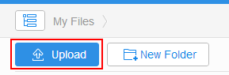

How Can I Add or Upload a File?
<<Back to Help CenterWebsite
- Log in to StorBox website.
- Click Upload.

- In the window that is displayed, select the files you want to upload and click Open.
The uploading progress is displayed at the right corner of the website page. After the file is uploaded successfully, the uploading list box at the right corner of the website page disappears and the file has been added to StorBox.
Windows
After the StorBox cloud manager client has been installed in the computer, you can use the following method to upload files to the cloud.
- Log in to StorBox cloud manager client.
- Click Upload in the My Space page.
- Select the files you want to upload and click Upload.